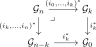
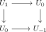
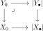
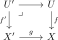
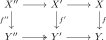
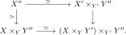
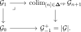
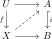
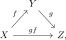

2.2. Effective epimorphisms
We will now introduce an important class of morphisms \(X \twoheadrightarrow Y\) in a topos, known as the effective epimorphisms. There are various ways of thinking about such morphisms:
They are higher categorical analogues of the effective epimorphisms from 1-category theory, i.e. those morphisms that exhibit \(Y\) as the quotient of \(X\) at the equivalence relation \(X \times_Y X \subseteq X \times X\);
They are those morphisms for which the pullback functor \(T_{/Y} \to T_{/X}\) is conservative, allowing us to check various conditions of maps in \(T_{/X}\) after pulling back to \(Y\);
They are the topos-theoretic analogues of the covers in a Grothendieck site.
Following Lurie, we take perspective (1) as our definition. To make this precise, we first recall the notion of groupoid objects.
2.2.1. Groupoid objects
Recall that a (classical) groupoid is a classical category \(\Gg\) in which all morphisms are invertible. Concretely, it consists of a set \(\Gg_0\) of objects, a set \(\Gg_1\) of morphisms, source/target maps \(s,t\colon \Gg_1 \to \Gg_0\), unit and inverse maps \(e\colon \Gg_0 \to \Gg_1\) and \(i\colon \Gg_1 \to \Gg_1\), and a composition map \(m\colon \Gg_1 \times_{s,\Gg_0,t} \Gg_1 \to \Gg_1\), satisfying the expected relations.
The higher categorical analogue is the following:
Let \(C\) be a category. A simplicial object \(\Gg\colon\simp\catop \to C\) is called a groupoid object if for every \([n] \in \simp\) and every (not necessarily order-preserving) partition \begin{align*} [n] \simeq \{i_0,\dots ,i_k\} \sqcup_{\{i_k\}} \{i_k,\dots,i_n\}, \end{align*} the induced diagram

is a pullback square in \(C\). We let \(\Grpd(C) \subseteq \Fun(\simp\catop,C)\) denote the full subcategory spanned by the groupoid objects in \(C\).
Show that a groupoid object in \(\Set\) is nothing but a classical groupoid.
For the purposes of topos theory, we may think of groupoid objects as higher categorical analogues of equivalence relations. Given a groupoid \(\Gg\) in the category of sets, the image of the map \((s,t)\colon \Gg_1 \to \Gg_0 \times \Gg_0\) is an equivalence relation on \(\Gg_0\). Indeed, reflexivity follows from the identity maps, transitivity follows from composition of morphisms, and symmetry follows by inverting morphisms. Conversely, equivalence relations \(R \subseteq X \times X\) on a set \(X\) correspond bijectively to groupoids in sets \(\Gg\) such that \(\Gg_0 = X\) and the map \((s,t)\colon \Gg_1 \hookrightarrow \Gg_0 \times \Gg_0\) is injective. Under this correspondence, the colimit \(\abs{\Gg}\) of the groupoid corresponds to the quotient \(X / R\).
Given a groupoid object \(\Gg_{\bullet}\) in \(C\) with \(X = \Gg_0\), we similarly think of the colimit \(\abs{\Gg_{\bullet}}\) as a “quotient of \(X\) by the relations contained in \(\Gg\)”. Unlike an equivalence relation, a groupoid may have several morphisms between two objects, as well as nontrivial automorphisms. This additional structure contributes nontrivially to the quotient object.
Lemma 2.20. ([Lurie 2009, Proposition 6.1.2.11])
Let \(C\) be a category and consider an augmented simplicial object \(U_{\bullet}^+\colon\simp\catop_+ \to C\). The following conditions are equivalent:
The diagram \(U_{\bullet}^+\) is right Kan extended from \((\simp_+^{\leq 0})\catop \subseteq \simp\catop_+\);
The simplicial object \(U_{\bullet} := U_{\bullet}^+\vert_{\simp}\) is a groupoid object and the square

is a pullback square.
Proof
The definitions of universal/effective colimits specialize to groupoids as follows:
Let \(C\) be a category with pullbacks and geometric realizations.
A geometric realization \(X = \abs{X_{\bullet}} := \colim_{n} X_n\) is called a groupoid colimit if the simplicial object \(X_{\bullet}\colon \simp\catop \to C\) is a groupoid.
We say groupoid colimits are effective in \(C\) if for every cartesian transformation \(Y_{\bullet} \to X_{\bullet}\) of groupoid objects, the commutative square

is a pullback square.
We say that groupoid colimits are universal if for every morphism \(f\colon A \to B\) in \(C\), the pullback functor \(f^*\colon C_{/B} \to C_{/A}\) preserves groupoid colimits.
Let \(C\) be a category with pullbacks and geometric realizations. Then \(C\) satisfies descent for groupoid colimits if and only if groupoid colimits are universal and effective.
Proof
Groupoid colimits are effective in a topos.
2.2.2. Effective epimorphisms and Čech nerves
In 1-category theory, a morphism \(f\colon U \to X\) is called an effective epimorphism if it exhibits its target as the quotient of its source at the equivalence relation \(U \times_X U\) determined by \(f\). Equivalently, \(X\) is the coequalizer of the two projection maps \(U \times_X U \rightrightarrows U\).
The definition in the higher categorical setting is similar. We replace the equivalence relation \(U \times_X U\) by a certain groupoid object \(\check{C}_{\bullet}(f)\) called the Čech nerve of \(f\). In degrees \(\leq 1\), this groupoid is given by the two projection maps \(U \times_X U \rightrightarrows U\).
Construction 2.24. (Čech nerve)
Let \(C\) be a category with pullbacks. For a morphism \(f\colon U \to X\) in \(C\), we define its Čech nerve \(\check{C}_{\bullet}(f) \in \Fun(\simp\catop,C)\) as the image of \(f \in \Ar(C)\) under the following functor:
Here \(\simp_+\) is the augmented simplex category, \(i\colon \simp \hookrightarrow \simp_+\) is the canonical inclusion, \(j\colon \simp_+^{\leq 0} \hookrightarrow \simp_+\) is the inclusion of the objects \([-1]\) and \([0]\), and \([1] \simeq (\simp^{\leq 0}_+)\catop\) is the canonical equivalence sending \(0\) to \([0]\) and \(1\) to \([-1]\). The pointwise formula for the right Kan extension \(j_*\) shows that the Čech nerve is given by
This computation also shows that the right Kan extension functor \(j_*\) exists.
Given a morphism \(f\colon U \to X\), we will write \(\check{C}^+_{\bullet}(f)\) for the augmented simplicial diagram \(j_*(f) \colon \simp_+\catop \to C\), and refer to this as the augmented Čech nerve of \(f\). Under the canonical equivalence between \(\simp_+\catop\) and \((\simp\catop)^{\triangleright}\), we may think of \(\check{C}^+_{\bullet}(f)\) as encoding a cocone on \(\check{C}_{\bullet}(f)\) with cone point \(X\).
Let \(C\) be a category with pullbacks. Then the Čech nerve \(\check{C}_{\bullet}(f)\) of any morphism \(f\) is a groupoid object.
Proof
Let \(C\) be a category with pullbacks. A morphism \(f\colon U \to X\) is called an effective epimorphism if the cocone \(\check{C}^+_{\bullet}(f)\) is a colimit diagram, exhibiting \(X\) as the geometric realization \(\abs{\check{C}_{\bullet}(f)}\) of its Čech nerve. We denote by
the full subcategory spanned by the effective epimorphisms.
This terminology is standard but rather unfortunate: not every effective epimorphism is an epimorphism in the categorical sense, see Example 5.8 below for a counterexample. The terminology is a historical accident. In a 1-category, effective epimorphisms are always epimorphisms, but this fails in higher categories.
Let \(C\) be a category with pullbacks such that groupoid colimits are universal in \(C\) (e.g. \(C\) is a topos).
A morphism \(f\colon U \to X\) in \(C\) is an effective epimorphism if and only if the functor \(f^*\colon C_{/X} \to C_{/U}\) is conservative.
Effective epimorphisms are closed under base change.
Proof

Let \(C\) be a category with pullbacks such that groupoid colimits are universal in \(C\) (e.g. \(C\) is a topos). Consider a commutative diagram in \(C\) as follows:

Assume that the map \(Y'' \to Y'\) is an effective epimorphism. If both the left-hand square and the outer rectangle are pullback squares, then so is the right-hand square.
Proof

We now show that the category of effective epimorphisms in a topos is equivalent to the category of groupoids, via passage to the Čech nerve. We start with the following simple observation:
Let \(C\) be a category with pullbacks and geometric realizations. Then the functor \(\check{C}_{\bullet}\colon \Ar(C) \to \Fun(\simp\catop,C)\) admits a left adjoint
sending a simplicial object \(X_{\bullet}\) to the map \(X_0 \to \colim_{[n] \in \simp\catop} X_n\).
Proof
We may use this adjunction to reformulate the condition of effectivity of groupoids from Definition 2.21:
Let \(C\) be a category with pullbacks and geometric realizations, and assume that groupoid colimits are universal. Then the following three conditions are equivalent:
The category \(C\) satisfies descent for groupoid colimits;
Groupoid colimits are effective in \(C\);
For every groupoid object \(\Gg\) the unit \(\Gg \to \check{C}_{\bullet}(\Gg_0 \to \abs{\Gg})\) of the adjunction from Lemma 2.31 is an isomorphism.
Proof

Let \(C\) be a category satisfying descent for groupoid colimits (e.g. a topos). Then the Čech nerve functor restricts to an equivalence
The inverse sends \(\Gg\) to the map \(\Gg_0 \to \abs{\Gg}\).
Proof
Let \(T\) be a topos. A pointed connected object is an object \(X\) equipped with an effective epimorphism \(* \twoheadrightarrow X\). We denote by \(T^{\geq 1}_* \subseteq T_*\) the subcategory of pointed connected objects.
Proposition 2.35. (Delooping principle)
Let \(T\) be a topos. Then there is an equivalence of categories
Proof

2.2.3. The epi-mono factorization system
In a topos, every morphism can be factored into an effective epimorphism followed by a monomorphism. This factorization is in fact unique. We formulate this precisely using factorization systems, which are recalled in Chapter A.
Let \(C\) be a category, and assume that groupoids are effective and universal. Then \(C\) admits a factorization system \((E,M)\) with \(E\) given by the effective epimorphisms and \(M\) given by the monomorphisms in \(C\).
Proof

2.2.4. Properties of effective epimorphisms
We now prove some basic properties of effective epimorphisms. Throughout this subsection, we fix a category \(C\) in which groupoids are effective and universal.
Effective epimorphisms are closed under composition.
Proof
Any morphism which has a section is an effective epimorphism.
Proof
Any morphism which is both a monomorphism and an effective epimorphism is an isomorphism. In particular, every monomorphism with a section is an isomorphism.
Proof
Given a commutative triangle

if \(gf\) is an effective epimorphism then so is \(g\).
Proof
References
- Jacob Lurie. Higher topos theory. Ann. Math. Stud. 170, Princeton, NJ: Princeton University Press. 2009.